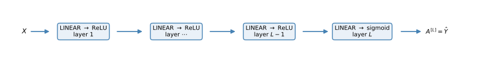

import numpy as np
import matplotlib.pyplot as plt
import copy
np.random.seed(1)Lab: Building Your Deep Neural Network Step by Step
deep-learning
neural-networks
backpropagation
numpy
lab
Implement every function a deep L-layer network needs in NumPy, from initialization through the forward and backward modules to the parameter update.
Welcome to the first of the two closing assignments of the course. In the previous lab you trained a 2 layer neural network with a single hidden layer. This lab builds a deep neural network with as many layers as you want. You implement all the functions required, and in the next assignment you will use these functions to build a deep network for image classification. The math is exactly what the deep L-layer networks and building blocks pages developed.
By the end of this assignment, you will be able to
- use non-linear units like ReLU to improve your model,
- build a deeper neural network (with more than one hidden layer),
- implement an easy-to-use collection of neural network building blocks.
The notation is the usual one. Superscript \([l]\) denotes the \(l\)-th layer, superscript \((i)\) denotes the \(i\)-th example, and subscript \(i\) denotes the \(i\)-th entry of a vector.
Packages
Just three imports this time. There is no dataset in this lab; every function is exercised on small seeded arrays (the same ones the course’s test suite uses), so the outputs below are reproducible.
Activation Functions, Forward and Backward
The course provides the helpers in dnn_utils.py and the seeded exercise inputs in testCases.py. Everything is reproduced inline on this page.
NoteLab Files Download
Everything this lab needs, ready to download. There is no dataset; every exercise runs on small seeded test inputs.
- dnn_utils.py (2 KB), the activation functions and their backward counterparts
- testCases.py (7 KB), the seeded exercise test cases
- public_tests.py (21 KB) and test_utils.py (6 KB), the graded exercise checks
The assignment provides four small helpers, the two activation functions and their backward counterparts. They are worth reading closely because they establish the cache pattern used everywhere in this lab. Each forward activation returns its output together with a cache holding \(Z\), exactly what the corresponding backward function will need later.
def sigmoid(Z):
"""Sigmoid activation. Returns A and a cache containing Z."""
A = 1 / (1 + np.exp(-Z))
cache = Z
return A, cache
def relu(Z):
"""ReLU activation. Returns A and a cache containing Z."""
A = np.maximum(0, Z)
assert(A.shape == Z.shape)
cache = Z
return A, cacheThe backward versions implement \(dZ^{[l]} = dA^{[l]} * g^{\prime}(Z^{[l]})\) for each choice of \(g\), using the derivatives of the activation functions. For the sigmoid, \(g'(z) = s(1-s)\) with \(s = \sigma(z)\). For ReLU, the derivative is 1 for positive \(z\) and 0 otherwise, so the backward pass simply zeroes out the entries of \(dA\) where \(Z \leq 0\).
def sigmoid_backward(dA, cache):
"""Backward propagation for a single sigmoid unit."""
Z = cache
s = 1 / (1 + np.exp(-Z))
dZ = dA * s * (1 - s)
assert(dZ.shape == Z.shape)
return dZ
def relu_backward(dA, cache):
"""Backward propagation for a single ReLU unit."""
Z = cache
dZ = np.array(dA, copy=True) # just converting dz to a correct object
dZ[Z <= 0] = 0 # when z <= 0, the gradient is 0
assert(dZ.shape == Z.shape)
return dZOutline
To build the network, you implement several helper functions, each with its own small job. In the next assignment they get assembled into a two layer network and an \(L\) layer network. The steps are
- Initialize the parameters, first for a two layer network, then for an \(L\) layer network.
- Implement the forward propagation module, in three pieces. The LINEAR part of a layer’s forward step (producing \(Z^{[l]}\)), then a [LINEAR \(\to\) ACTIVATION] function that adds the activation, then an
L_model_forwardfunction that stacks [LINEAR \(\to\) RELU] \(L-1\) times and adds one [LINEAR \(\to\) SIGMOID] at the end. - Compute the cost.
- Implement the backward propagation module, mirroring the forward module piece for piece.
- Update the parameters.
For every forward function there is a corresponding backward function, which is why at every forward step you store a cache; its values are needed to compute gradients, exactly the pattern of the building blocks figure.
Initialization
Two Layer Network
First, create and initialize the parameters of a 2 layer network with the structure LINEAR → RELU → LINEAR → SIGMOID, using small random weights and zero biases. (The fixed seed keeps the outputs reproducible.)
def initialize_parameters(n_x, n_h, n_y):
"""
Argument:
n_x -- size of the input layer
n_h -- size of the hidden layer
n_y -- size of the output layer
Returns:
parameters -- python dictionary containing your parameters:
W1 -- weight matrix of shape (n_h, n_x)
b1 -- bias vector of shape (n_h, 1)
W2 -- weight matrix of shape (n_y, n_h)
b2 -- bias vector of shape (n_y, 1)
"""
np.random.seed(1)
W1 = np.random.randn(n_h, n_x) * 0.01
b1 = np.zeros((n_h, 1))
W2 = np.random.randn(n_y, n_h) * 0.01
b2 = np.zeros((n_y, 1))
parameters = {"W1": W1,
"b1": b1,
"W2": W2,
"b2": b2}
return parameters
parameters = initialize_parameters(3, 2, 1)
print("W1 = " + str(parameters["W1"]))
print("b1 = " + str(parameters["b1"]))
print("W2 = " + str(parameters["W2"]))
print("b2 = " + str(parameters["b2"]))W1 = [[ 0.01624345 -0.00611756 -0.00528172]
[-0.01072969 0.00865408 -0.02301539]]
b1 = [[0.]
[0.]]
W2 = [[ 0.01744812 -0.00761207]]
b2 = [[0.]]L Layer Network
The initialization for a deeper network is a loop over the layers. The layer sizes come in as a list layer_dims, for example [5, 4, 3] for \(n^{[0]} = 5\) input features, a hidden layer with \(n^{[1]} = 4\) units, and an output layer with \(n^{[2]} = 3\) units. Following the dimension rules, \(W^{[l]}\) gets shape (layer_dims[l], layer_dims[l-1]) and \(b^{[l]}\) gets shape (layer_dims[l], 1).
def initialize_parameters_deep(layer_dims):
"""
Arguments:
layer_dims -- python array (list) containing the dimensions of each layer in our network
Returns:
parameters -- python dictionary containing your parameters "W1", "b1", ..., "WL", "bL":
Wl -- weight matrix of shape (layer_dims[l], layer_dims[l-1])
bl -- bias vector of shape (layer_dims[l], 1)
"""
np.random.seed(3)
parameters = {}
L = len(layer_dims) # number of layers in the network
for l in range(1, L):
parameters['W' + str(l)] = np.random.randn(layer_dims[l], layer_dims[l - 1]) * 0.01
parameters['b' + str(l)] = np.zeros((layer_dims[l], 1))
assert(parameters['W' + str(l)].shape == (layer_dims[l], layer_dims[l - 1]))
assert(parameters['b' + str(l)].shape == (layer_dims[l], 1))
return parameters
parameters = initialize_parameters_deep([5, 4, 3])
print("W1 = " + str(parameters["W1"]))
print("b1 = " + str(parameters["b1"]))
print("W2 = " + str(parameters["W2"]))
print("b2 = " + str(parameters["b2"]))W1 = [[ 0.01788628 0.0043651 0.00096497 -0.01863493 -0.00277388]
[-0.00354759 -0.00082741 -0.00627001 -0.00043818 -0.00477218]
[-0.01313865 0.00884622 0.00881318 0.01709573 0.00050034]
[-0.00404677 -0.0054536 -0.01546477 0.00982367 -0.01101068]]
b1 = [[0.]
[0.]
[0.]
[0.]]
W2 = [[-0.01185047 -0.0020565 0.01486148 0.00236716]
[-0.01023785 -0.00712993 0.00625245 -0.00160513]
[-0.00768836 -0.00230031 0.00745056 0.01976111]]
b2 = [[0.]
[0.]
[0.]]Note the indexing. len(layer_dims) counts the input layer too, so with layer_dims = [5, 4, 3] the loop runs over \(l = 1, 2\) and creates exactly the parameters for the \(L = 2\) computing layers.
Forward Propagation Module
Now the forward propagation module, built in three functions of increasing scope,
- LINEAR,
- LINEAR \(\to\) ACTIVATION, where the activation is ReLU or sigmoid,
- [LINEAR \(\to\) RELU] \(\times\) \((L-1)\) \(\to\) LINEAR \(\to\) SIGMOID, the whole model.
Linear Forward
The linear forward module, vectorized over all the examples, computes
\[ Z^{[l]} = W^{[l]} A^{[l-1]} + b^{[l]} \]
where \(A^{[0]} = X\). The function also returns its cache, the tuple (A, W, b), stored for computing the backward pass efficiently later.
def linear_forward(A, W, b):
"""
Implement the linear part of a layer's forward propagation.
Arguments:
A -- activations from previous layer (or input data): (size of previous layer, number of examples)
W -- weights matrix: numpy array of shape (size of current layer, size of previous layer)
b -- bias vector, numpy array of shape (size of the current layer, 1)
Returns:
Z -- the input of the activation function, also called pre-activation parameter
cache -- a python tuple containing "A", "W" and "b" ; stored for computing the backward pass efficiently
"""
Z = np.dot(W, A) + b
cache = (A, W, b)
return Z, cache
np.random.seed(1)
t_A = np.random.randn(3, 2)
t_W = np.random.randn(1, 3)
t_b = np.random.randn(1, 1)
t_Z, t_linear_cache = linear_forward(t_A, t_W, t_b)
print("Z = " + str(t_Z))Z = [[ 3.26295337 -1.23429987]]Linear-Activation Forward
For added convenience, group the linear step and the activation into one function, which computes \(A^{[l]} = g\big(Z^{[l]}\big) = g\big(W^{[l]} A^{[l-1]} + b^{[l]}\big)\) with \(g\) either sigmoid or ReLU. Its cache bundles the linear cache (A_prev, W, b) and the activation cache Z, everything the corresponding backward step will need.
def linear_activation_forward(A_prev, W, b, activation):
"""
Implement the forward propagation for the LINEAR->ACTIVATION layer
Arguments:
A_prev -- activations from previous layer (or input data): (size of previous layer, number of examples)
W -- weights matrix: numpy array of shape (size of current layer, size of previous layer)
b -- bias vector, numpy array of shape (size of the current layer, 1)
activation -- the activation to be used in this layer, stored as a text string: "sigmoid" or "relu"
Returns:
A -- the output of the activation function, also called the post-activation value
cache -- a python tuple containing "linear_cache" and "activation_cache";
stored for computing the backward pass efficiently
"""
if activation == "sigmoid":
Z, linear_cache = linear_forward(A_prev, W, b)
A, activation_cache = sigmoid(Z)
elif activation == "relu":
Z, linear_cache = linear_forward(A_prev, W, b)
A, activation_cache = relu(Z)
cache = (linear_cache, activation_cache)
return A, cache
np.random.seed(2)
t_A_prev = np.random.randn(3, 2)
t_W = np.random.randn(1, 3)
t_b = np.random.randn(1, 1)
t_A, t_linear_activation_cache = linear_activation_forward(t_A_prev, t_W, t_b, activation="sigmoid")
print("With sigmoid: A = " + str(t_A))
t_A, t_linear_activation_cache = linear_activation_forward(t_A_prev, t_W, t_b, activation="relu")
print("With ReLU: A = " + str(t_A))With sigmoid: A = [[0.96890023 0.11013289]]
With ReLU: A = [[3.43896131 0. ]]Note that in deep learning, the [LINEAR \(\to\) ACTIVATION] computation is counted as a single layer in the neural network, not two.
L-Layer Model
For even more convenience when implementing the \(L\) layer network, you need a function that replicates linear_activation_forward with ReLU \(L-1\) times, then follows with one linear_activation_forward with sigmoid.

In the code, the variable AL denotes \(A^{[L]} = \sigma\big(Z^{[L]}\big) = \sigma\big(W^{[L]} A^{[L-1]} + b^{[L]}\big)\), sometimes also called Yhat, that is, \(\hat{Y}\). Two hints. The for loop starts at 1 because layer 0 is the input, and each iteration appends its cache to the caches list.
def L_model_forward(X, parameters):
"""
Implement forward propagation for the [LINEAR->RELU]*(L-1)->LINEAR->SIGMOID computation
Arguments:
X -- data, numpy array of shape (input size, number of examples)
parameters -- output of initialize_parameters_deep()
Returns:
AL -- activation value from the output (last) layer
caches -- list of caches containing:
every cache of linear_activation_forward() (there are L of them, indexed from 0 to L-1)
"""
caches = []
A = X
L = len(parameters) // 2 # number of layers in the neural network
# Implement [LINEAR -> RELU]*(L-1). Add "cache" to the "caches" list.
# The for loop starts at 1 because layer 0 is the input
for l in range(1, L):
A_prev = A
A, cache = linear_activation_forward(A_prev, parameters['W' + str(l)], parameters['b' + str(l)], "relu")
caches.append(cache)
# Implement LINEAR -> SIGMOID. Add "cache" to the "caches" list.
AL, cache = linear_activation_forward(A, parameters['W' + str(L)], parameters['b' + str(L)], "sigmoid")
caches.append(cache)
return AL, caches
np.random.seed(6)
t_X = np.random.randn(5, 4)
t_parameters = {'W1': np.random.randn(4, 5),
'b1': np.random.randn(4, 1),
'W2': np.random.randn(3, 4),
'b2': np.random.randn(3, 1),
'W3': np.random.randn(1, 3),
'b3': np.random.randn(1, 1)}
t_AL, t_caches = L_model_forward(t_X, t_parameters)
print("AL = " + str(t_AL))AL = [[0.03921668 0.70498921 0.19734387 0.04728177]]You now have a full forward propagation that takes the input \(X\) and outputs a row vector \(A^{[L]}\) containing the predictions, along with all the caches in caches, one per layer.
Cost Function
To check whether the model is actually learning, compute the cross entropy cost
\[ J = -\frac{1}{m} \sum_{i=1}^{m} \Big( y^{(i)} \log\big(a^{[L](i)}\big) + \big(1 - y^{(i)}\big) \log\big(1 - a^{[L](i)}\big) \Big) \]
def compute_cost(AL, Y):
"""
Implement the cost function defined by the equation above.
Arguments:
AL -- probability vector corresponding to your label predictions, shape (1, number of examples)
Y -- true "label" vector (for example: containing 0 if non-cat, 1 if cat), shape (1, number of examples)
Returns:
cost -- cross-entropy cost
"""
m = Y.shape[1]
# Compute loss from aL and y.
cost = -1 / m * np.sum(Y * np.log(AL) + (1 - Y) * np.log(1 - AL))
cost = np.squeeze(cost) # To make sure your cost's shape is what we expect (e.g. this turns [[17]] into 17).
return cost
t_Y = np.asarray([[1, 1, 0]])
t_AL = np.array([[0.8, 0.9, 0.4]])
print("cost = " + str(compute_cost(t_AL, t_Y)))cost = 0.2797765635793422Backward Propagation Module
Just as for forward propagation, you implement helper functions for backpropagation, which calculates the gradient of the loss with respect to the parameters. The structure mirrors the forward module exactly, in three steps. LINEAR backward, then LINEAR \(\to\) ACTIVATION backward, then the whole-model L_model_backward. The forward and backward chains together are precisely the three layer figure from the building blocks page.
Before diving in, a quick refresher on np.sum, which the linear backward step needs. axis=1 sums across each row, axis=0 down each column, and keepdims=True keeps the summed-out dimension with size 1 (avoiding rank 1 arrays).
A = np.array([[1, 2], [3, 4]])
print('axis=1 and keepdims=True')
print(np.sum(A, axis=1, keepdims=True))
print('axis=1 and keepdims=False')
print(np.sum(A, axis=1, keepdims=False))
print('axis=0 and keepdims=True')
print(np.sum(A, axis=0, keepdims=True))
print('axis=0 and keepdims=False')
print(np.sum(A, axis=0, keepdims=False))axis=1 and keepdims=True
[[3]
[7]]
axis=1 and keepdims=False
[3 7]
axis=0 and keepdims=True
[[4 6]]
axis=0 and keepdims=False
[4 6]Linear Backward
For layer \(l\), the linear part is \(Z^{[l]} = W^{[l]} A^{[l-1]} + b^{[l]}\), followed by an activation. Suppose you have already calculated the derivative \(dZ^{[l]}\). The linear backward step turns it into the three outputs \(\big(dW^{[l]}, db^{[l]}, dA^{[l-1]}\big)\), using the cached (A_prev, W, b) and the familiar formulas,
\[ dW^{[l]} = \frac{1}{m} \, dZ^{[l]} A^{[l-1]\,T} \qquad db^{[l]} = \frac{1}{m} \sum_{i=1}^{m} dZ^{[l](i)} \qquad dA^{[l-1]} = W^{[l]\,T} dZ^{[l]} \]
def linear_backward(dZ, cache):
"""
Implement the linear portion of backward propagation for a single layer (layer l)
Arguments:
dZ -- Gradient of the cost with respect to the linear output (of current layer l)
cache -- tuple of values (A_prev, W, b) coming from the forward propagation in the current layer
Returns:
dA_prev -- Gradient of the cost with respect to the activation (of the previous layer l-1), same shape as A_prev
dW -- Gradient of the cost with respect to W (current layer l), same shape as W
db -- Gradient of the cost with respect to b (current layer l), same shape as b
"""
A_prev, W, b = cache
m = A_prev.shape[1]
dW = 1 / m * np.dot(dZ, A_prev.T)
db = 1 / m * np.sum(dZ, axis=1, keepdims=True)
dA_prev = np.dot(W.T, dZ)
return dA_prev, dW, db
np.random.seed(1)
t_dZ = np.random.randn(3, 4)
t_A = np.random.randn(5, 4)
t_W = np.random.randn(3, 5)
t_b = np.random.randn(3, 1)
t_linear_cache = (t_A, t_W, t_b)
t_dA_prev, t_dW, t_db = linear_backward(t_dZ, t_linear_cache)
print("dA_prev: " + str(t_dA_prev))
print("dW: " + str(t_dW))
print("db: " + str(t_db))dA_prev: [[-1.15171336 0.06718465 -0.3204696 2.09812712]
[ 0.60345879 -3.72508701 5.81700741 -3.84326836]
[-0.4319552 -1.30987417 1.72354705 0.05070578]
[-0.38981415 0.60811244 -1.25938424 1.47191593]
[-2.52214926 2.67882552 -0.67947465 1.48119548]]
dW: [[ 0.07313866 -0.0976715 -0.87585828 0.73763362 0.00785716]
[ 0.85508818 0.37530413 -0.59912655 0.71278189 -0.58931808]
[ 0.97913304 -0.24376494 -0.08839671 0.55151192 -0.10290907]]
db: [[-0.14713786]
[-0.11313155]
[-0.13209101]]Linear-Activation Backward
Next, merge linear_backward with the backward step for the activation. The provided sigmoid_backward and relu_backward compute \(dZ^{[l]} = dA^{[l]} * g'\big(Z^{[l]}\big)\) from the activation cache, and then linear_backward takes over.
def linear_activation_backward(dA, cache, activation):
"""
Implement the backward propagation for the LINEAR->ACTIVATION layer.
Arguments:
dA -- post-activation gradient for current layer l
cache -- tuple of values (linear_cache, activation_cache) we store for computing backward propagation efficiently
activation -- the activation to be used in this layer, stored as a text string: "sigmoid" or "relu"
Returns:
dA_prev -- Gradient of the cost with respect to the activation (of the previous layer l-1), same shape as A_prev
dW -- Gradient of the cost with respect to W (current layer l), same shape as W
db -- Gradient of the cost with respect to b (current layer l), same shape as b
"""
linear_cache, activation_cache = cache
if activation == "relu":
dZ = relu_backward(dA, activation_cache)
dA_prev, dW, db = linear_backward(dZ, linear_cache)
elif activation == "sigmoid":
dZ = sigmoid_backward(dA, activation_cache)
dA_prev, dW, db = linear_backward(dZ, linear_cache)
return dA_prev, dW, db
np.random.seed(2)
t_dAL = np.random.randn(1, 2)
t_A = np.random.randn(3, 2)
t_W = np.random.randn(1, 3)
t_b = np.random.randn(1, 1)
t_Z = np.random.randn(1, 2)
t_linear_activation_cache = ((t_A, t_W, t_b), t_Z)
t_dA_prev, t_dW, t_db = linear_activation_backward(t_dAL, t_linear_activation_cache, activation="sigmoid")
print("With sigmoid: dA_prev = " + str(t_dA_prev))
print("With sigmoid: dW = " + str(t_dW))
print("With sigmoid: db = " + str(t_db))
t_dA_prev, t_dW, t_db = linear_activation_backward(t_dAL, t_linear_activation_cache, activation="relu")
print("With relu: dA_prev = " + str(t_dA_prev))
print("With relu: dW = " + str(t_dW))
print("With relu: db = " + str(t_db))With sigmoid: dA_prev = [[ 0.11017994 0.01105339]
[ 0.09466817 0.00949723]
[-0.05743092 -0.00576154]]
With sigmoid: dW = [[ 0.10266786 0.09778551 -0.01968084]]
With sigmoid: db = [[-0.05729622]]
With relu: dA_prev = [[ 0.44090989 0. ]
[ 0.37883606 0. ]
[-0.2298228 0. ]]
With relu: dW = [[ 0.44513824 0.37371418 -0.10478989]]
With relu: db = [[-0.20837892]]L-Model Backward
Now the backward function for the whole network. Recall that L_model_forward stored a cache at every iteration. In L_model_backward you iterate through all the layers backward, starting from layer \(L\), using the cache of layer \(l\) to backpropagate through layer \(l\).
Initializing backpropagation. The output is \(A^{[L]} = \sigma\big(Z^{[L]}\big)\), so the code first needs \(dA^{[L]} = \frac{\partial \mathcal{L}}{\partial A^{[L]}}\), which for the cross entropy loss is the familiar expression
dAL = - (np.divide(Y, AL) - np.divide(1 - Y, 1 - AL))Feed dAL into the LINEAR \(\to\) SIGMOID backward step for layer \(L\), then loop backward through the remaining layers with the LINEAR \(\to\) RELU backward step, storing each result in the grads dictionary under keys like grads["dW3"] for \(dW^{[3]}\).
def L_model_backward(AL, Y, caches):
"""
Implement the backward propagation for the [LINEAR->RELU] * (L-1) -> LINEAR -> SIGMOID group
Arguments:
AL -- probability vector, output of the forward propagation (L_model_forward())
Y -- true "label" vector (containing 0 if non-cat, 1 if cat)
caches -- list of caches containing:
every cache of linear_activation_forward() with "relu" (it's caches[l], for l in range(L-1) i.e l = 0...L-2)
the cache of linear_activation_forward() with "sigmoid" (it's caches[L-1])
Returns:
grads -- A dictionary with the gradients
grads["dA" + str(l)] = ...
grads["dW" + str(l)] = ...
grads["db" + str(l)] = ...
"""
grads = {}
L = len(caches) # the number of layers
m = AL.shape[1]
Y = Y.reshape(AL.shape) # after this line, Y is the same shape as AL
# Initializing the backpropagation
dAL = -(np.divide(Y, AL) - np.divide(1 - Y, 1 - AL))
# Lth layer (SIGMOID -> LINEAR) gradients
current_cache = caches[L - 1]
dA_prev_temp, dW_temp, db_temp = linear_activation_backward(dAL, current_cache, "sigmoid")
grads["dA" + str(L - 1)] = dA_prev_temp
grads["dW" + str(L)] = dW_temp
grads["db" + str(L)] = db_temp
# Loop from l=L-2 to l=0
for l in reversed(range(L - 1)):
# lth layer: (RELU -> LINEAR) gradients
current_cache = caches[l]
dA_prev_temp, dW_temp, db_temp = linear_activation_backward(grads["dA" + str(l + 1)], current_cache, "relu")
grads["dA" + str(l)] = dA_prev_temp
grads["dW" + str(l + 1)] = dW_temp
grads["db" + str(l + 1)] = db_temp
return grads
np.random.seed(3)
t_AL = np.random.randn(1, 2)
t_Y = np.array([[1, 0]])
t_A1 = np.random.randn(4, 2)
t_W1 = np.random.randn(3, 4)
t_b1 = np.random.randn(3, 1)
t_Z1 = np.random.randn(3, 2)
t_A2 = np.random.randn(3, 2)
t_W2 = np.random.randn(1, 3)
t_b2 = np.random.randn(1, 1)
t_Z2 = np.random.randn(1, 2)
t_caches = (((t_A1, t_W1, t_b1), t_Z1), ((t_A2, t_W2, t_b2), t_Z2))
grads = L_model_backward(t_AL, t_Y, t_caches)
print("dA0 = " + str(grads['dA0']))
print("dA1 = " + str(grads['dA1']))
print("dW1 = " + str(grads['dW1']))
print("dW2 = " + str(grads['dW2']))
print("db1 = " + str(grads['db1']))
print("db2 = " + str(grads['db2']))dA0 = [[ 0. 0.52257901]
[ 0. -0.3269206 ]
[ 0. -0.32070404]
[ 0. -0.74079187]]
dA1 = [[ 0.12913162 -0.44014127]
[-0.14175655 0.48317296]
[ 0.01663708 -0.05670698]]
dW1 = [[0.41010002 0.07807203 0.13798444 0.10502167]
[0. 0. 0. 0. ]
[0.05283652 0.01005865 0.01777766 0.0135308 ]]
dW2 = [[-0.39202432 -0.13325855 -0.04601089]]
db1 = [[-0.22007063]
[ 0. ]
[-0.02835349]]
db2 = [[0.15187861]]Update Parameters
Finally, update the parameters of the model using gradient descent,
\[ W^{[l]} := W^{[l]} - \alpha \, dW^{[l]} \qquad b^{[l]} := b^{[l]} - \alpha \, db^{[l]} \]
where \(\alpha\) is the learning rate. The updated parameters go back into the parameters dictionary, with copy.deepcopy protecting the caller’s dictionary from being modified in place.
def update_parameters(params, grads, learning_rate):
"""
Update parameters using gradient descent
Arguments:
params -- python dictionary containing your parameters
grads -- python dictionary containing your gradients, output of L_model_backward
Returns:
parameters -- python dictionary containing your updated parameters
parameters["W" + str(l)] = ...
parameters["b" + str(l)] = ...
"""
parameters = copy.deepcopy(params)
L = len(parameters) // 2 # number of layers in the neural network
# Update rule for each parameter. Use a for loop.
for l in range(L):
parameters["W" + str(l + 1)] = parameters["W" + str(l + 1)] - learning_rate * grads["dW" + str(l + 1)]
parameters["b" + str(l + 1)] = parameters["b" + str(l + 1)] - learning_rate * grads["db" + str(l + 1)]
return parameters
np.random.seed(2)
t_W1 = np.random.randn(3, 4)
t_b1 = np.random.randn(3, 1)
t_W2 = np.random.randn(1, 3)
t_b2 = np.random.randn(1, 1)
t_parameters = {"W1": t_W1, "b1": t_b1, "W2": t_W2, "b2": t_b2}
np.random.seed(3)
t_grads = {"dW1": np.random.randn(3, 4),
"db1": np.random.randn(3, 1),
"dW2": np.random.randn(1, 3),
"db2": np.random.randn(1, 1)}
t_parameters = update_parameters(t_parameters, t_grads, 0.1)
print("W1 = " + str(t_parameters["W1"]))
print("b1 = " + str(t_parameters["b1"]))
print("W2 = " + str(t_parameters["W2"]))
print("b2 = " + str(t_parameters["b2"]))W1 = [[-0.59562069 -0.09991781 -2.14584584 1.82662008]
[-1.76569676 -0.80627147 0.51115557 -1.18258802]
[-1.0535704 -0.86128581 0.68284052 2.20374577]]
b1 = [[-0.04659241]
[-1.28888275]
[ 0.53405496]]
W2 = [[-0.55569196 0.0354055 1.32964895]]
b2 = [[-0.84610769]]
NoteWhat to Remember
You have implemented all the functions required for building a deep neural network:
- initialization for a two layer network and for an \(L\) layer network,
- the forward module in three pieces (linear, linear-activation, whole model), each step storing its cache,
- the cross entropy cost,
- the backward module mirroring the forward module, consuming the caches to produce the gradients,
- the gradient descent parameter update.
In the next assignment, these functions get assembled into two models, a two layer network and an \(L\) layer network, and trained to classify cat vs non-cat images.
Review Questions
1. What goes into the two parts of a layer’s cache, and which backward computation needs each part?
TipAnswer
The linear cache stores (A_prev, W, b), needed by linear_backward (for example \(A^{[l-1]T}\) in \(dW^{[l]}\) and \(W^{[l]T}\) in \(dA^{[l-1]}\)). The activation cache stores \(Z^{[l]}\), needed by relu_backward or sigmoid_backward to compute \(dZ^{[l]} = dA^{[l]} * g'(Z^{[l]})\).
1. In L_model_forward, why does the for loop run from 1 to \(L-1\) with the final layer handled separately?
TipAnswer
The first \(L-1\) layers all use the ReLU activation, so one loop covers them. The output layer uses a different activation, the sigmoid, so it gets its own call after the loop. The model is [LINEAR \(\to\) RELU] \(\times (L-1)\) followed by LINEAR \(\to\) SIGMOID.
1. How does relu_backward compute \(dZ^{[l]}\) from \(dA^{[l]}\) and the cached \(Z^{[l]}\)?
TipAnswer
The ReLU derivative is 1 where \(z > 0\) and 0 where \(z \leq 0\), so \(dZ\) is a copy of \(dA\) with the entries where \(Z \leq 0\) set to 0. No multiplication is actually needed, just masking.
1. What value initializes the backward recursion in L_model_backward, and where does it come from?
TipAnswer
dAL = -(np.divide(Y, AL) - np.divide(1 - Y, 1 - AL)), which is \(-\frac{Y}{A^{[L]}} + \frac{1-Y}{1-A^{[L]}}\), the derivative of the cross entropy loss with respect to the output activation. It feeds the sigmoid backward step of layer \(L\), and each layer’s dA output then feeds the layer below.
1. Why do dW and db carry a \(\frac{1}{m}\) factor while dA_prev does not?
TipAnswer
\(dW^{[l]}\) and \(db^{[l]}\) are derivatives of the cost \(J\), the average of the \(m\) per-example losses, so they average over the examples. \(dA^{[l-1]}\) is an intermediate per-example gradient passed backward through the chain; the averaging happens once, when the parameter gradients are formed from \(dZ^{[l]}\).
1. With layer_dims = [5, 4, 3], which parameters does initialize_parameters_deep create, and with what shapes?
TipAnswer
len(layer_dims) is 3, so the loop runs over \(l = 1, 2\) and creates \(W^{[1]}\) of shape \((4, 5)\), \(b^{[1]}\) of shape \((4, 1)\), \(W^{[2]}\) of shape \((3, 4)\), and \(b^{[2]}\) of shape \((3, 1)\), following \(W^{[l]} : (n^{[l]}, n^{[l-1]})\) and \(b^{[l]} : (n^{[l]}, 1)\).